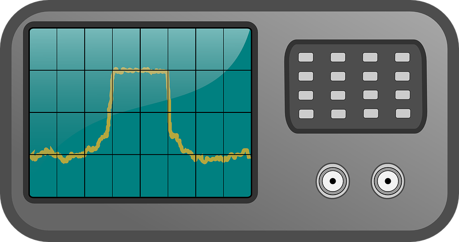

LEVEL 1
LEVEL 2
LEVEL 3
LEVEL 4
REFERENCE OSCILLATOR FREQUENCY
10 Hz
Hz
kHz
MHz
SECONDS GENERATOR

|
|
TIME OFFSET
OSCILLATOR FREQUENCY
16 Hz
PHASE DIFFERENCE
0.0030°
PHASE NOISE
(-19°,19°)
0
DRIFT
0.003 s/h
TUTORIAL
PAUSE
RESET
LOCK
REAL-TIME BEHAVIOR OF YOUR CLOCK (s)
How to Play?
Congrats Buddy! You have cleared this level.
More Info
Game Tutorial
GAME FINISHED
Well Done!
You have cleared all the levels of this Game